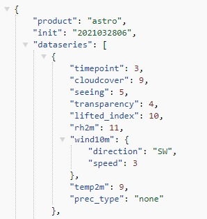

Parameter dari API 7Timer!
lon, lat : Geographic coordinates of the specified site, must be given as pure float numbers, such as +23.090 or -23.090. At this stage, the precision of any incoming coordinate float number is expected to be 0.001. Incoming float with higher precision will be rounded.
ac : Altitude Correction, only applicable in ASTRO forecast. Should be 0 (default), 2 or 7.
lang : Language. Not applicable in METEO product.
unit : Metric or British
output : should be internal (for graphical output), xml or json.
tzshift : Adjustment of timezone, should be 0, 1 or -1.
API Output Example (JSON) :
API :
http://www.7timer.info/bin/api.pl?lon=113.17&lat=23.09&product=astro&output=xml
There are four parameters that need to be set to successfully call the API: lon and lat for geographic coordinate of the location, product for the product you wish to use (any of "astro", "civil", "civillight", "meteo" or "two"), and output for the standard you wish to use (either "xml" or "json").